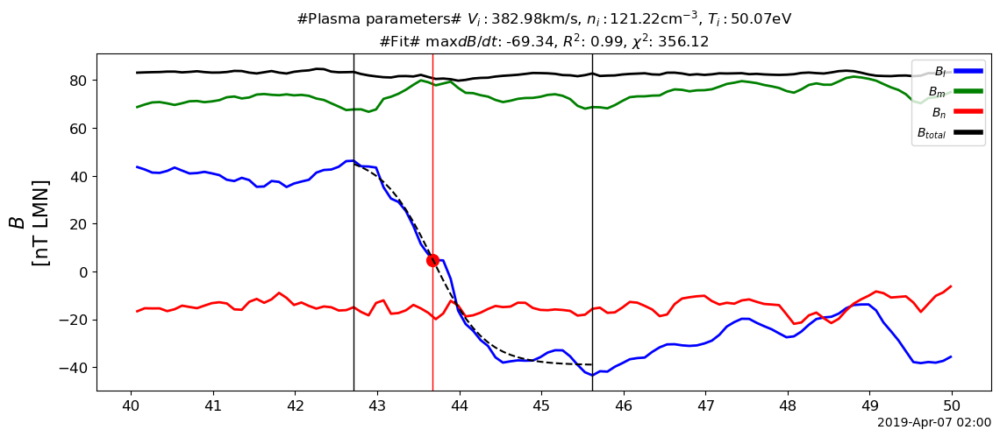

Orbit in Heliographic Coordinates

ENLIL simulation
Normalized
solar
wind
density
at
the
ecliptic
and
the
IMF
lines
Radial
solar
wind
velocity
at
the
ecliptic
on
the
global
and
detail
regions
together
with
the
temporal
profile
at
spacecraft


Perrone et al. (2019)
The radial dependence of the proton number density, \(n_p\) and magnetic field magnitude, \(B\), is given by
\[n_p = (2.4 ± 0.1)(R/R_0)^{−(1.96±0.07)} cm^{−3}\] \[B = (5.7 ± 0.2)(R/R_0)^{−(1.59±0.06)} nT\]The faster decrease of the magnetic than kinetic pressure is reflected in the radial proton plasma beta variation
\[β_p = P_k/P_B = (0.55 ± 0.04)(R/R_0)^{(0.4±0.1)}.\]

References
Perrone, Denise, D Stansby, T S Horbury, and L Matteini. 2019. “Radial Evolution of the Solar Wind in Pure High-Speed Streams: HELIOS Revised Observations.” Monthly Notices of the Royal Astronomical Society 483 (3): 3730–37. https://doi.org/10.1093/mnras/sty3348.